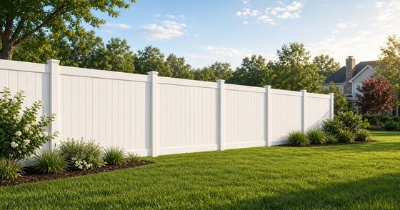

Quick answer: Willow Spring fence rules depend on the lot, not the name on the mail. Johnston County's town list includes some parts of Willow Spring and does not name a Town of Willow Spring. A lot can also sit in Wake County, or in a nearby town's planning area. Check the parcel before you build. This is homeowner information, not legal advice. See our Willow Spring area page.
Which county covers a Willow Spring fence?
Johnston County's town list says some parts of Willow Spring are in Johnston County. Wake County's Southern Regional Center names Willow Spring as a community it serves. Wake County also gives a Willow Spring address, 3321 NC Hwy 42, Willow Spring, NC 27592, for a county park in the southeast corner of the county.
Your mailing address does not pick the office. Two homes can both say Willow Spring and still answer to different counties.
On the Wake County side, use iMAPS. Wake County Planning says to enter the address or parcel number and read the "Jurisdiction" line. The agency named there is the one to follow. Planning only covers unincorporated Wake County. If the line names a town, that town's rules apply. Those steps are on the county's About PDS page.
That town area can be an ETJ, which means extraterritorial jurisdiction. Wake County says an ETJ lets a town apply its development rules outside the town limits. You do not pay that town's taxes just for being in the ETJ. For a fence, the town's development rules can still be the ones that count.
On the Johnston County side, Planning and Zoning handles zoning in the unincorporated part of the county. The planning FAQ says you can look up zoning in GIS MapClick, or stop by the Planning Office.
What fence rules does Wake County publish?
Wake County says setbacks and other design rules are in its Unified Development Ordinance. The county links that book on Municode from its UDO page.
Those plain-language county pages do not print a front-yard or backyard fence height for unincorporated lots. If the Jurisdiction line says Wake County, open the ordinance or call Wake County Planning before you order panels. Their number is 919-856-6335. That number is the county planning office's, from its About PDS page, and it is not our business line.
If the Jurisdiction line names Fuquay-Varina, use the town's height rules instead. Those are in our fence height limits guide.
What does Johnston County say about a fence?
Johnston County's building-permit page lists fences with the projects that do not need a building permit. That is not a promise about every other approval. The planning FAQ says a land use permit is how the county looks at setbacks, flood plain, zoning, the proposed use, and the 911 address.
On the fence line, the county is direct. It does not have a setback requirement for fences. It asks you to keep the fence completely on your side of the property line. It also says there are no setbacks for fences or trees. It advises you not to build right on the line, in case the line is not where you think. It recommends 1 to 2 feet off the property line, and it says the county cannot enforce that recommendation.
If the lot may be in a flood plain, the county asks you to point the property out on its flood plain map at the Planning Office, or to check the North Carolina Flood Risk Information System. Planning's number is (919) 989-5150. That number is Johnston County Planning's, from the same FAQ page, and it is not our business line.
What about drainage easements and utility lines?
An easement is a strip of your land that someone else has a right to use. Look at your plat, the recorded map of the lot. Johnston County's stormwater guide says a plat can show easements, setbacks, stream buffers, and wetlands. Wake County's iMAPS page says the maps are for information and are not surveys, so do not treat the screen as your property corners.
On the Johnston County side, the county's homeowner drainage guide says a drainage easement is where runoff is expected, such as a swale, ditch, or pipe. It says you generally cannot put improvements there, including fences. Do not place a fence across or in the easement if it blocks drainage. The county's guide says water can back up and the bottom of the fence can rot faster. The county does not maintain those easements. A property owner or an HOA does.
The Wake County pages used here do not print that same no-fence sentence for every unincorporated lot. Still read the plat. If a drainage or utility easement is drawn on it, ask before you build on that strip.
Why call 811 before anyone digs?
North Carolina law says the person who will dig must give notice first. For a normal yard, that notice has to be at least three full working days before the start date. The law is G.S. 87-122. G.S. 87-119 says the notification center may not charge you for giving that notice.
You reach the center through NC 811. Dial 811, or 1-800-632-4949. NC 811 says it marks primary utility lines. Private lines on private property are not marked. The call is a safety step. It is not a fence permit, and it does not replace your HOA. When you want a look at the line, request a free estimate or call or text (919) 276-8406.
What if an HOA has its own fence rules?
County rules and HOA rules are separate. North Carolina law says an owners' association may adopt and amend rules, unless its own documents say otherwise. That is G.S. 47F-3-102. Your covenants, sometimes called CC&Rs, and any design guidelines are the papers that count.
Read the current rules. Send the fence type, height, color, and a sketch on your plat. Wait for a written yes before anyone digs. We are not your HOA, so we cannot approve the fence or promise that your HOA will. Our HOA fence approval guide walks through that process.
Should you fence the whole lot or only part of it?
If the lot is large, fencing every foot of the boundary is a different job from fencing the part you use. The county pages above do not say you must fence the whole lot, and they do not ban a fence around only part of the yard. That choice is practical homeowner planning, not a county height rule.
A full line means more posts, more gates, and a better chance of crossing a ditch, woods, or an easement. A partial fence around the yard you use, a dog area, or a garden is often the simpler plan. On a long run, our guide to chain link in southern Wake covers dogs, budget, and how coat rules differ once you are inside a town. For a solid section, see our wood privacy fence page.
Bring the plat, the map result, and any HOA rules to the estimate. Request a free estimate or call or text (919) 276-8406.
Willow Spring fence FAQ
How do I tell if my Willow Spring lot is in Wake County or Johnston County?
Use Wake County iMAPS and read the Jurisdiction line, or use Johnston County GIS MapClick. The city on your mail is not the test.
Does Johnston County set a fence setback?
No. The county says it has no fence setback. It recommends 1 to 2 feet inside your line, and it says it cannot enforce that tip.
Do I need a building permit for a fence in Johnston County?
The county's permits page lists fences with projects that do not need a building permit. If the lot may be in a flood plain, call Johnston County Planning at (919) 989-5150 before you start.
Does an HOA approval replace the county rules?
No. Get the HOA answer in writing, and still follow the county or town that the map names for your lot.

Free Estimate
Get Your Free Fence Estimate
Tell us about your project and we'll reach out to schedule a free, no-obligation estimate. Prefer to talk now? Call (919) 276-8406.
- Free on-site measurement
- No obligation, no pressure
- Serving Fuquay-Varina and nearby